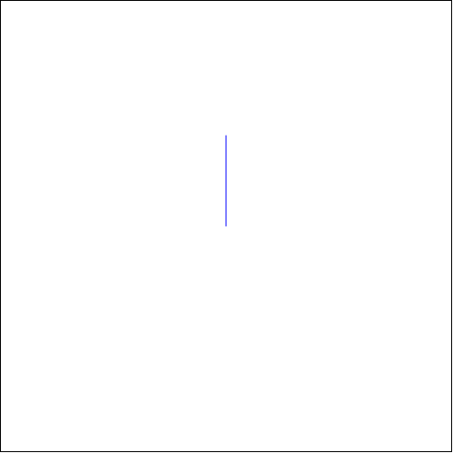

4.1 Racket Turtle:n toimintaperiaate
Racket Turtle - kirjaston avulla voi piirtää perinteisiä turtle-grafiikkakuvia ohjaamalla ruudulla liikkuvaa turtle-kilpikonnaa (musta kolmio) menemään suoraan, kääntymään vasemmalle, nostamaan kynänsä ylös, laskemaan sen alas jne. Tämän lisäksi kirjaston avulla on mahdollista piirtää leimoja Turtlen sijaintipisteisiin, peilata Turtlen piirtämä kuvio x- ja/tai y-akselin suunnassa sekä ohjata Turtle kulkemaan koordinaattipisteestä toiseen. Kuvista saa mielenkiintoisen näköisiä vaihtamalla kynän väriä, kynän paksuutta ja viivan tyyppiä, myös taustavärin sekä taustakuvan voi asettaa mieleisikseen.

Turtlen ohjaaminen tapahtuu komentolistojen avulla. Kun listassa on tarvittavat komennot, lista annetaan argumenttina piirtofunktiolle, joka lukee listan ja piirtää sen avulla kuvan. Valitsemalla erilaisen piirtofunktion, sama kuvio voidaan piirtää eri kokoisena, eri nopeudella, tallentaa gif-animaationa tai piirtää askel-kerrallaan.
Komentolista kannattaa määritellä define:n avulla ja antaa sille kuvaava nimi. Yksinkertaisin komentolista sisältää yhden komennon ja sen argumentin kirjoitettuna sulkujen sisään.
Tämä komentolista piirtää yhden 100 pikselin mittaisen viivan ruudun keskeltä suoraan ylöspäin (Turtlen lähtöpiste on keskellä ruutua pisteessä (250, 250) ja sen rintamasuunta on ylöspäin).
Piirtofunktion kutsuminen (interaktioikkunassa):
(draw viiva)

Kaikki Racket Turtlen komennot ja piirtofunktiot on esitelty seuraavissa luvuissa.